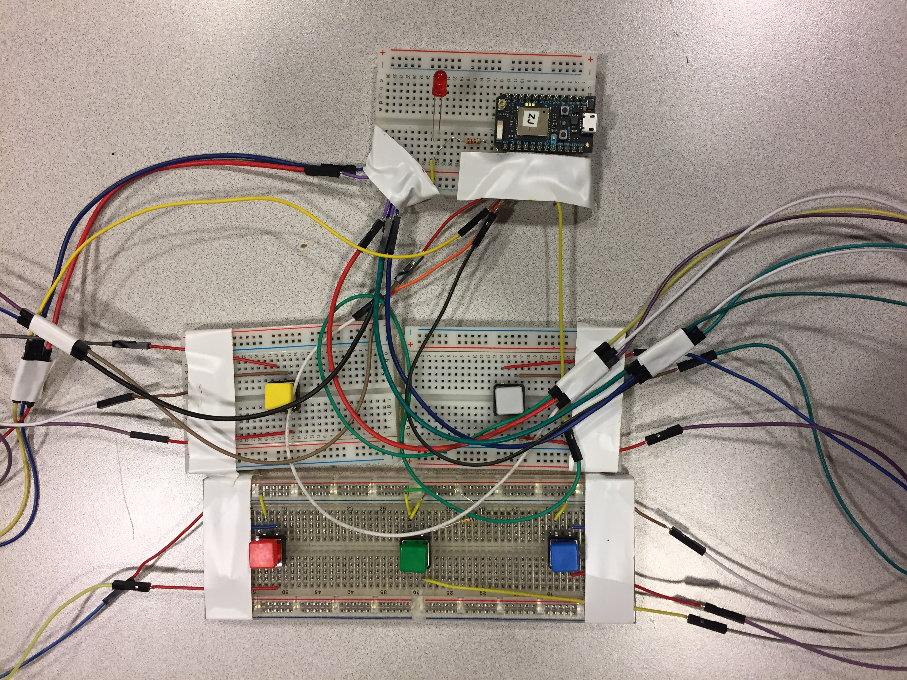
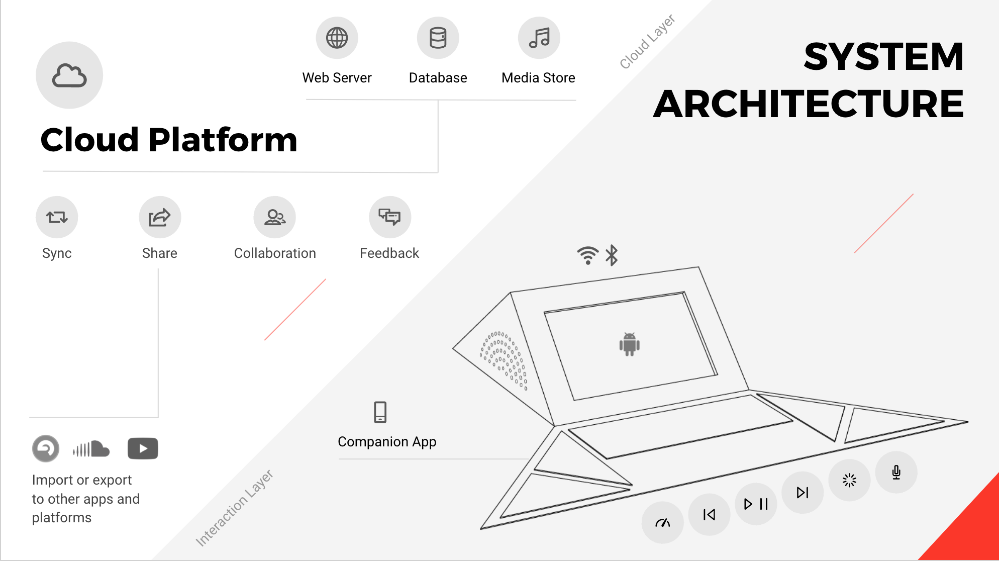

MUSI
Practice with your ensemble anytime, anywhere - at the tap of a foot.

Musi connects musicians through asynchronous practice and reflection. The system features an innovative foot-operated mat that allows classical musicians to quickly and easily record their practice sessions to share with peers, instructors, and others in their network.
I worked on this project with a team of three other students in SI 612: Pervasive Interactive Design course at UMSI. I took part in all stages of research and design, but I took the lead in connecting our project to music students and faculty at the university throughout our design process.
My Role: UX Designer
Timeline: September – December 2017
Process:
Overview

Practice is a vital part of a musician’s life. Solo practice is an important time for musicians to reflect on their technique and musical expression, but that time alone can lead to frustration and discouragement. Group rehearsal, on the other hand, allows musicians to develop stronger listening and collaboration skills with support from their musical community. Still, group rehearsal requires ensemble members to be physically present at the same moment in time.
Existing tools that rely on mobile devices and laptops take users’ focus away from playing their instruments. We sought to create a tool that would require minimal setup, encourage discussion and reflection between musicians in an ensemble, and minimize distractions from technology.
Phase I: Formative Study
Observations & Interviews
To better understand the context in which musicians practice, we began our formative study by conducting 2 hour-long observations of the music practice wing at the Earl V. Moore building on the University of Michigan campus, then conducted 2 in-depth interviews to broaden our understanding of the field.
We developed overarching research questions to drive our semi-structured interviews: how can music technologies influence the behavior of musicians; what opportunities and constraints exist in this space; and which have been under- or over-explored? Our team first interviewed a computer science professor who has researched and developed musical technologies used in educational contexts. We then interviewed a graduate student musician from China to better understand how classical music traditions can diverge and be influenced by regional and cultural factors.
After our observations and interviews, we sketched out a preliminary concept for technological interventions in the practice room:
Cultural Probes
We then wanted to gain a deeper understanding of musicians’ attitudes towards technical innovation of musical instruments, clothing, and spaces. We chose to conduct a cultural probe because like Gaver et al, we sought an “impressionistic account of [music students’] beliefs and desires, their aesthetic preferences and cultural attitudes”, and decided we could best achieve this through participatory design activities.
We individually brainstormed activities for the probe, then selected five that would inspire diverse responses from participants about their practice regimens. We designed visuals for each prompt to provide structure, clarity, and inspiration for participants, and pasted the prompts into journals.
We recruited 3 undergraduate music majors. Participants had 5 days to complete the activities at their leisure. Upon collection of the journals, we conducted short interviews to debrief and clarify their responses.

Data Analysis and Key Insights
We used an affinity wall to cluster the quotes, drawings, and observation notes from our formative study.
We learned that musicians:
- aren’t looking for radical transformations of their existing routines; rather, musicians value their practice spaces, their instruments, their teachers and mentors, and their friends in their ensembles, and in their cultural probe responses, dreamed up subtle ways to strengthen their bonds with their musical community.
- are constantly striving to find intrinsic and extrinsic motivation to persevere through solo practice sessions that last several hours.
- seek ways to play accompanying tracks while practicing alone to hear harmonies and complex rhythms within their ensemble. Cultural probe participants expressed a desire to play secondary instruments with their feet as a way of understanding how their primary instrument fits in with other parts in a piece.
Phase II: Ideation
We individually sketched 14 concepts which we narrowed down by considering each design’s potential acceptability in the musical community, level of positive impact on practice, and lack of disruption in the practice space.
We found that 2 concepts complemented one another – a foot-operated mat that would facilitate the recording, looping, and playing back of practice tracks for later review and reflection, and a social network that would allow musicians to share recordings of their practice with their peers and instructors, thereby bringing their community into the practice room. We merged them for further development.
User Enactments
We conducted user enactments to challenge the assumptions we made during the ideation process by bringing our concept to target users. We used cardboard and paper to create low fidelity prototypes of various mat shapes and buttons with which participants could enact these use cases.
We set up our prototype materials in a music practice room and recruited music students passing through the music practice wing. Participants engaged in the enactments individually, with team members taking turns as moderator, note taker, and photographer.
Participants were asked to manipulate the prototypes for comfort and ease of interaction: they could adjust the mat’s placement, select buttons they found appropriate for the scenario, and then place the buttons on the mat where they liked. We took photographs of their arrangements, and asked them to explain their placement choices as well as their opinions and attitudes of using particular features or using their feet to interact with the device.

We developed a second affinity wall to analyze our findings, as follow.
- Different instruments have different design requirements due to size, shape and positioning.
- Participants tend to tap their feet while playing to keep rhythm, and don't want this foot tapping sound to get recorded.
- Metronomes are important tools when practicing complex rhythms.
- Some participants record for personal use only, and wouldn’t want their recordings to be public. Others said they share recordings for auditions or self-promotion.
- Participants want to control and play multiple parts at once, particularly of instruments in their own section so they can hear how they harmonize.
- Participants said they would find the process of organizing and reviewing large batches of tracks more manageable on a larger screen, like their phone or laptop, while the mat would be more useful for operating functions that more immediately support them as they play.
Concept Refinement
We refined our concept based on our findings.
Storyboarding
Before we began prototyping, we developed storyboards of concept use cases.
Phase III: Prototyping
Look and Feel
We wanted the surface texture and color of the product to mimic vintage speakers and classical instrument cases. We built the body of the Musi prism out of wood, and used deep brown vinyl to construct the pad. Next, we iterated on the shape of the product with sketches and 3D models. The final result is a compact, sleek design that can be folded to form a portable shape.
Backend
We used a laptop to act as our primary computation and recording device. We used Waveform Playlist, an open source audio recording tool, to support our recording and playback features as well as to visualize the audio waveforms. We mirrored this graphical user interface onto an iPad, which we placed onto the prototype prism as a way of demonstrating implementation of the Musi screen.
We used a Particle Photon to prototype the buttons on the physical device. At first, we explored using Force Sensitive Resistors to control the system’s recording, playback, and scrolling functions. We learned, however, that the FSRs were too sensitive and responded to ambient tapping. We decided to develop our prototype using 5 switches for better control; we also found that the physicality of the switches’ “clicking” sound provided users with clearer feedback that the button had been pressed.
Companion Application
We prototyped the companion mobile app using Sketch and InVision. Users can interact with the app prototype to experience the full use scenario, but actual syncing of tracks requires the laptop to load playable tracks onto the physical prototype’s GUI.
Final System Concept
Musi consists of two main components: the prism, which supports foot-based interactions, and a companion app, which allows users to easily manage, share, and provide feedback on recordings.
Musi Prism
- Record and playback practice sessions
- Set and adjust tempo for metronome and recordings automatically with foot tapping
- Automatically upload recordings to the cloud
Musi Companion App
- Load companion music into the prism
- Share recordings with others
- Comment on recordings
- Facilitates compatibility and sharing across other music platforms, such as SoundCloud and YouTube
Phase IV: Evaluation
We evaluated our design in two contexts: first, by setting up our working prototype in a music practice room and invited music students passing by to record and playback tracks; and second, by inviting attendees at a university design exposition to use our prototype. We were able to identify areas to drive future design work and help us realize an ideal concept.
Flexibility
Throughout our design process, we had considered how we could create a physical device flexible enough to meet the needs of differently sized and shaped instruments. We found that whether recording with voice or a large instrument like a cello (Figure 12), the Musi prototype was flexible enough for users to adapt it to their ideal positioning without sacrificing their technique and posture.
Recording Quality
We used a laptop's internal microphone and external Bluetooth speakers to demonstrate Musi's recording and playback features. We found that recordings of some instruments had unwanted distortion. Higher quality speakers and microphones would benefit Musi, as would adjustable sound input settings.
Visual Feedback
Musi's buttons provide an audible click when pressed. Still, our current system interface does not provide visual feedback on the system status: e.g. when the system has started or stopped recording. Adding visual signifiers would aid both novice users as well as more advanced users who are focused on their music, not memorizing the arrangement of buttons
Phase V: Next Steps
Musi has been selected as one of 12 finalists in the CHI Student Design Competition 2018. Our team plans to conduct additional user research through usability testing to continue iterating on our prototype - both the prism and the companion app - before presenting at the competition. Stay tuned here for more updates!